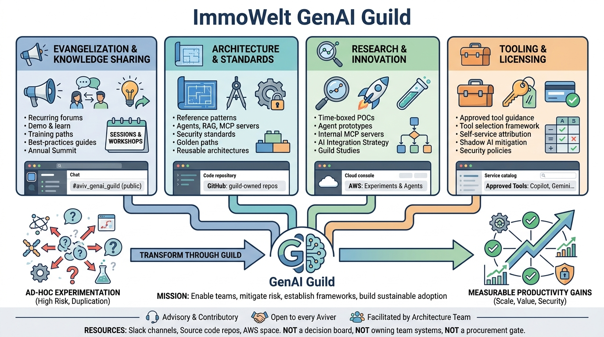

Communities of Practice
GenAI Guild as a Cross-Team Generative AI Consortium

Image generated by Google Gemini (gemini-3-pro-image-preview)
Communities of Practice

Image generated by Google Gemini (gemini-3-pro-image-preview)